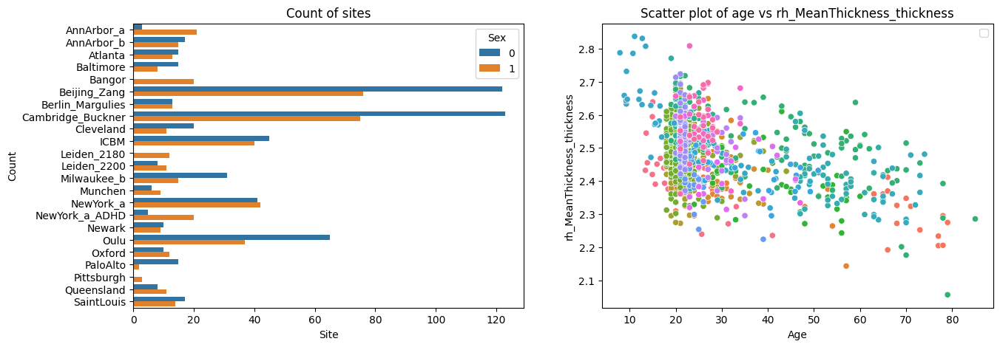

<!DOCTYPE html>
<html class="writer-html5" lang="en" data-content_root="../../">
<head>
  <meta charset="utf-8" /><meta name="viewport" content="width=device-width, initial-scale=1" />

  <meta name="viewport" content="width=device-width, initial-scale=1.0" />
  <title>Command line interface &mdash; PCNToolkit 1.0.0 documentation</title>
      <link rel="stylesheet" type="text/css" href="../../_static/pygments.css?v=b86133f3" />
      <link rel="stylesheet" type="text/css" href="../../_static/css/theme.css?v=e59714d7" />
      <link rel="stylesheet" type="text/css" href="../../_static/graphviz.css?v=4ae1632d" />

  
      <script src="../../_static/jquery.js?v=5d32c60e"></script>
      <script src="../../_static/_sphinx_javascript_frameworks_compat.js?v=2cd50e6c"></script>
      <script src="../../_static/documentation_options.js?v=8d563738"></script>
      <script src="../../_static/doctools.js?v=9bcbadda"></script>
      <script src="../../_static/sphinx_highlight.js?v=dc90522c"></script>
    <script src="../../_static/js/theme.js"></script>
    <link rel="index" title="Index" href="../../genindex.html" />
    <link rel="search" title="Search" href="../../search.html" />
    <link rel="next" title="Contributing" href="../contributing.html" />
    <link rel="prev" title="Fitting normative models on a compute cluster" href="04_cluster.html" /> 
</head>

<body class="wy-body-for-nav"> 
  <div class="wy-grid-for-nav">
    <nav data-toggle="wy-nav-shift" class="wy-nav-side">
      <div class="wy-side-scroll">
        <div class="wy-side-nav-search" >

          
          
          <a href="../../index.html" class="icon icon-home">
            PCNToolkit
          </a>
<div role="search">
  <form id="rtd-search-form" class="wy-form" action="../../search.html" method="get">
    <input type="text" name="q" placeholder="Search docs" aria-label="Search docs" />
    <input type="hidden" name="check_keywords" value="yes" />
    <input type="hidden" name="area" value="default" />
  </form>
</div>
        </div><div class="wy-menu wy-menu-vertical" data-spy="affix" role="navigation" aria-label="Navigation menu">
              <p class="caption" role="heading"><span class="caption-text">Setup:</span></p>
<ul>
<li class="toctree-l1"><a class="reference internal" href="../quickstart.html">Quickstart Guide</a></li>
</ul>
<p class="caption" role="heading"><span class="caption-text">Background</span></p>
<ul>
<li class="toctree-l1"><a class="reference internal" href="../background.html">PCNtoolkit Background</a></li>
</ul>
<p class="caption" role="heading"><span class="caption-text">Function &amp; Class Docs</span></p>
<ul>
<li class="toctree-l1"><a class="reference internal" href="../../api.html">API Reference</a></li>
</ul>
<p class="caption" role="heading"><span class="caption-text">Tutorials</span></p>
<ul class="current">
<li class="toctree-l1"><a class="reference internal" href="00_getting_started.html">Getting started with normative modelling</a></li>
<li class="toctree-l1"><a class="reference internal" href="01_loading_data.html">The NormData class</a></li>
<li class="toctree-l1"><a class="reference internal" href="02_BLR.html">Normative Modelling: Bayesian Linear Regression</a></li>
<li class="toctree-l1"><a class="reference internal" href="03_HBR.html">Normative Modelling: Hierarchical Bayesian Regression</a></li>
<li class="toctree-l1"><a class="reference internal" href="04_cluster.html">Fitting normative models on a compute cluster</a></li>
<li class="toctree-l1 current"><a class="current reference internal" href="#">Command line interface</a><ul>
<li class="toctree-l2"><a class="reference internal" href="#blr-example">BLR Example</a><ul>
<li class="toctree-l3"><a class="reference internal" href="#data-preparation">Data preparation</a></li>
<li class="toctree-l3"><a class="reference internal" href="#blr-configuration">BLR configuration</a></li>
<li class="toctree-l3"><a class="reference internal" href="#constructing-command">Constructing command</a></li>
<li class="toctree-l3"><a class="reference internal" href="#running-command">Running command</a></li>
</ul>
</li>
<li class="toctree-l2"><a class="reference internal" href="#hbr-example">HBR example</a><ul>
<li class="toctree-l3"><a class="reference internal" href="#id3">Constructing command</a></li>
<li class="toctree-l3"><a class="reference internal" href="#id4">Running command</a></li>
</ul>
</li>
</ul>
</li>
</ul>
<p class="caption" role="heading"><span class="caption-text">For developers</span></p>
<ul>
<li class="toctree-l1"><a class="reference internal" href="../contributing.html">Contributing</a></li>
<li class="toctree-l1"><a class="reference internal" href="../../autoapi/index.html">API Reference</a></li>
</ul>

        </div>
      </div>
    </nav>

    <section data-toggle="wy-nav-shift" class="wy-nav-content-wrap"><nav class="wy-nav-top" aria-label="Mobile navigation menu" >
          <i data-toggle="wy-nav-top" class="fa fa-bars"></i>
          <a href="../../index.html">PCNToolkit</a>
      </nav>

      <div class="wy-nav-content">
        <div class="rst-content">
          <div role="navigation" aria-label="Page navigation">
  <ul class="wy-breadcrumbs">
      <li><a href="../../index.html" class="icon icon-home" aria-label="Home"></a></li>
      <li class="breadcrumb-item active">Command line interface</li>
      <li class="wy-breadcrumbs-aside">
            <a href="../../_sources/pages/tutorials/05_command_line_interface.rst.txt" rel="nofollow"> View page source</a>
      </li>
  </ul><div class="rst-breadcrumbs-buttons" role="navigation" aria-label="Sequential page navigation">
        <a href="04_cluster.html" class="btn btn-neutral float-left" title="Fitting normative models on a compute cluster" accesskey="p"><span class="fa fa-arrow-circle-left" aria-hidden="true"></span> Previous</a>
        <a href="../contributing.html" class="btn btn-neutral float-right" title="Contributing" accesskey="n">Next <span class="fa fa-arrow-circle-right" aria-hidden="true"></span></a>
  </div>
  <hr/>
</div>
          <div role="main" class="document" itemscope="itemscope" itemtype="http://schema.org/Article">
           <div itemprop="articleBody">
             
  <section id="command-line-interface">
<h1>Command line interface<a class="headerlink" href="#command-line-interface" title="Link to this heading"></a></h1>
<p>The PCNtoolkit is a python package, but it can also be used from the
command line.</p>
<p>Here we show how to use the PCNtoolkit from the command line.</p>
<p>Furthermore, you can use this script to generate commands for the
command line interface. (Although if you are able to run this notebook,
why not just use it as a python package?)</p>
<div class="highlight-ipython3 notranslate"><div class="highlight"><pre><span></span><span class="kn">import</span><span class="w"> </span><span class="nn">pandas</span><span class="w"> </span><span class="k">as</span><span class="w"> </span><span class="nn">pd</span>
<span class="kn">import</span><span class="w"> </span><span class="nn">numpy</span><span class="w"> </span><span class="k">as</span><span class="w"> </span><span class="nn">np</span>
<span class="kn">from</span><span class="w"> </span><span class="nn">sklearn.model_selection</span><span class="w"> </span><span class="kn">import</span> <span class="n">train_test_split</span>
<span class="kn">import</span><span class="w"> </span><span class="nn">seaborn</span><span class="w"> </span><span class="k">as</span><span class="w"> </span><span class="nn">sns</span>
<span class="kn">import</span><span class="w"> </span><span class="nn">matplotlib.pyplot</span><span class="w"> </span><span class="k">as</span><span class="w"> </span><span class="nn">plt</span>
<span class="kn">import</span><span class="w"> </span><span class="nn">os</span>
<span class="kn">import</span><span class="w"> </span><span class="nn">sys</span>
<span class="kn">import</span><span class="w"> </span><span class="nn">pickle</span>
</pre></div>
</div>
<section id="blr-example">
<h2>BLR Example<a class="headerlink" href="#blr-example" title="Link to this heading"></a></h2>
<section id="data-preparation">
<h3>Data preparation<a class="headerlink" href="#data-preparation" title="Link to this heading"></a></h3>
<div class="highlight-ipython3 notranslate"><div class="highlight"><pre><span></span><span class="c1"># Download and split data first</span>
<span class="c1"># If you are running this notebook for the first time, you need to download the dataset from github.</span>
<span class="c1"># If you have already downloaded the dataset, you can comment out the following line</span>
<span class="n">pd</span><span class="o">.</span><span class="n">read_csv</span><span class="p">(</span>
    <span class="s2">&quot;https://raw.githubusercontent.com/predictive-clinical-neuroscience/PCNtoolkit-demo/refs/heads/main/data/fcon1000.csv&quot;</span>
<span class="p">)</span><span class="o">.</span><span class="n">to_csv</span><span class="p">(</span><span class="s2">&quot;resources/data/fcon1000.csv&quot;</span><span class="p">,</span> <span class="n">index</span><span class="o">=</span><span class="kc">False</span><span class="p">)</span>
</pre></div>
</div>
<div class="highlight-ipython3 notranslate"><div class="highlight"><pre><span></span><span class="n">data</span> <span class="o">=</span> <span class="n">pd</span><span class="o">.</span><span class="n">read_csv</span><span class="p">(</span><span class="s2">&quot;resources/data/fcon1000.csv&quot;</span><span class="p">)</span>
</pre></div>
</div>
<div class="highlight-ipython3 notranslate"><div class="highlight"><pre><span></span><span class="c1"># Inspect the data</span>
<span class="n">fig</span><span class="p">,</span> <span class="n">ax</span> <span class="o">=</span> <span class="n">plt</span><span class="o">.</span><span class="n">subplots</span><span class="p">(</span><span class="mi">1</span><span class="p">,</span> <span class="mi">2</span><span class="p">,</span> <span class="n">figsize</span><span class="o">=</span><span class="p">(</span><span class="mi">15</span><span class="p">,</span> <span class="mi">5</span><span class="p">))</span>
<span class="n">sns</span><span class="o">.</span><span class="n">scatterplot</span><span class="p">(</span><span class="n">data</span><span class="o">=</span><span class="n">data</span><span class="p">,</span> <span class="n">x</span><span class="o">=</span><span class="p">(</span><span class="s2">&quot;age&quot;</span><span class="p">),</span> <span class="n">y</span><span class="o">=</span><span class="p">(</span><span class="s2">&quot;rh_MeanThickness_thickness&quot;</span><span class="p">),</span> <span class="n">hue</span><span class="o">=</span><span class="p">(</span><span class="s2">&quot;site&quot;</span><span class="p">),</span> <span class="n">ax</span><span class="o">=</span><span class="n">ax</span><span class="p">[</span><span class="mi">1</span><span class="p">])</span>
<span class="n">ax</span><span class="p">[</span><span class="mi">1</span><span class="p">]</span><span class="o">.</span><span class="n">legend</span><span class="p">([],</span> <span class="p">[])</span>
<span class="n">ax</span><span class="p">[</span><span class="mi">1</span><span class="p">]</span><span class="o">.</span><span class="n">set_title</span><span class="p">(</span><span class="s2">&quot;Scatter plot of age vs rh_MeanThickness_thickness&quot;</span><span class="p">)</span>
<span class="n">ax</span><span class="p">[</span><span class="mi">1</span><span class="p">]</span><span class="o">.</span><span class="n">set_xlabel</span><span class="p">(</span><span class="s2">&quot;Age&quot;</span><span class="p">)</span>
<span class="n">ax</span><span class="p">[</span><span class="mi">1</span><span class="p">]</span><span class="o">.</span><span class="n">set_ylabel</span><span class="p">(</span><span class="s2">&quot;rh_MeanThickness_thickness&quot;</span><span class="p">)</span>
<span class="n">sns</span><span class="o">.</span><span class="n">countplot</span><span class="p">(</span><span class="n">data</span><span class="o">=</span><span class="n">data</span><span class="p">,</span> <span class="n">y</span><span class="o">=</span><span class="s2">&quot;site&quot;</span><span class="p">,</span> <span class="n">hue</span><span class="o">=</span><span class="s2">&quot;sex&quot;</span><span class="p">,</span> <span class="n">ax</span><span class="o">=</span><span class="n">ax</span><span class="p">[</span><span class="mi">0</span><span class="p">],</span> <span class="n">orient</span><span class="o">=</span><span class="s2">&quot;h&quot;</span><span class="p">)</span>
<span class="n">ax</span><span class="p">[</span><span class="mi">0</span><span class="p">]</span><span class="o">.</span><span class="n">legend</span><span class="p">(</span><span class="n">title</span><span class="o">=</span><span class="s2">&quot;Sex&quot;</span><span class="p">)</span>
<span class="n">ax</span><span class="p">[</span><span class="mi">0</span><span class="p">]</span><span class="o">.</span><span class="n">set_title</span><span class="p">(</span><span class="s2">&quot;Count of sites&quot;</span><span class="p">)</span>
<span class="n">ax</span><span class="p">[</span><span class="mi">0</span><span class="p">]</span><span class="o">.</span><span class="n">set_xlabel</span><span class="p">(</span><span class="s2">&quot;Site&quot;</span><span class="p">)</span>
<span class="n">ax</span><span class="p">[</span><span class="mi">0</span><span class="p">]</span><span class="o">.</span><span class="n">set_ylabel</span><span class="p">(</span><span class="s2">&quot;Count&quot;</span><span class="p">)</span>
<span class="n">plt</span><span class="o">.</span><span class="n">show</span><span class="p">()</span>
</pre></div>
</div>

<div class="highlight-ipython3 notranslate"><div class="highlight"><pre><span></span><span class="c1"># Split into X, y, and batch effects</span>
<span class="n">covariate_columns</span> <span class="o">=</span> <span class="p">[</span><span class="s2">&quot;age&quot;</span><span class="p">]</span>
<span class="n">batch_effect_columns</span> <span class="o">=</span> <span class="p">[</span><span class="s2">&quot;sex&quot;</span><span class="p">,</span> <span class="s2">&quot;site&quot;</span><span class="p">]</span>
<span class="n">response_columns</span> <span class="o">=</span> <span class="p">[</span><span class="s2">&quot;rh_MeanThickness_thickness&quot;</span><span class="p">,</span> <span class="s2">&quot;WM-hypointensities&quot;</span><span class="p">]</span>

<span class="n">X</span> <span class="o">=</span> <span class="n">data</span><span class="p">[</span><span class="n">covariate_columns</span><span class="p">]</span>
<span class="n">Y</span> <span class="o">=</span> <span class="n">data</span><span class="p">[</span><span class="n">response_columns</span><span class="p">]</span>
<span class="n">batch_effects</span> <span class="o">=</span> <span class="n">data</span><span class="p">[</span><span class="n">batch_effect_columns</span><span class="p">]</span>

<span class="n">batch_effects_strings</span> <span class="o">=</span> <span class="p">[</span><span class="nb">str</span><span class="p">(</span><span class="n">b</span><span class="p">[</span><span class="mi">0</span><span class="p">])</span> <span class="o">+</span> <span class="s2">&quot; &quot;</span> <span class="o">+</span> <span class="nb">str</span><span class="p">(</span><span class="n">b</span><span class="p">[</span><span class="mi">1</span><span class="p">])</span> <span class="k">for</span> <span class="n">b</span> <span class="ow">in</span> <span class="n">batch_effects</span><span class="o">.</span><span class="n">values</span><span class="p">]</span>

<span class="c1"># Split into train and test set</span>
<span class="n">trainidx</span><span class="p">,</span> <span class="n">testidx</span> <span class="o">=</span> <span class="n">train_test_split</span><span class="p">(</span><span class="n">data</span><span class="o">.</span><span class="n">index</span><span class="p">,</span> <span class="n">test_size</span><span class="o">=</span><span class="mf">0.2</span><span class="p">,</span> <span class="n">random_state</span><span class="o">=</span><span class="mi">42</span><span class="p">,</span> <span class="n">stratify</span><span class="o">=</span><span class="n">batch_effects_strings</span><span class="p">)</span>
<span class="n">train_X</span> <span class="o">=</span> <span class="n">X</span><span class="o">.</span><span class="n">loc</span><span class="p">[</span><span class="n">trainidx</span><span class="p">]</span>
<span class="n">train_Y</span> <span class="o">=</span> <span class="n">Y</span><span class="o">.</span><span class="n">loc</span><span class="p">[</span><span class="n">trainidx</span><span class="p">]</span>
<span class="n">train_batch_effects</span> <span class="o">=</span> <span class="n">batch_effects</span><span class="o">.</span><span class="n">loc</span><span class="p">[</span><span class="n">trainidx</span><span class="p">]</span>

<span class="n">test_X</span> <span class="o">=</span> <span class="n">X</span><span class="o">.</span><span class="n">loc</span><span class="p">[</span><span class="n">testidx</span><span class="p">]</span>
<span class="n">test_Y</span> <span class="o">=</span> <span class="n">Y</span><span class="o">.</span><span class="n">loc</span><span class="p">[</span><span class="n">testidx</span><span class="p">]</span>
<span class="n">test_batch_effects</span> <span class="o">=</span> <span class="n">batch_effects</span><span class="o">.</span><span class="n">loc</span><span class="p">[</span><span class="n">testidx</span><span class="p">]</span>
</pre></div>
</div>
<div class="highlight-ipython3 notranslate"><div class="highlight"><pre><span></span><span class="c1"># Save stuff</span>
<span class="n">root_dir</span> <span class="o">=</span> <span class="n">os</span><span class="o">.</span><span class="n">path</span><span class="o">.</span><span class="n">join</span><span class="p">(</span><span class="s2">&quot;resources&quot;</span><span class="p">,</span> <span class="s2">&quot;cli_example&quot;</span><span class="p">)</span>
<span class="n">data_dir</span> <span class="o">=</span> <span class="n">os</span><span class="o">.</span><span class="n">path</span><span class="o">.</span><span class="n">join</span><span class="p">(</span><span class="n">root_dir</span><span class="p">,</span> <span class="s2">&quot;data&quot;</span><span class="p">)</span>
<span class="n">os</span><span class="o">.</span><span class="n">makedirs</span><span class="p">(</span><span class="n">data_dir</span><span class="p">,</span> <span class="n">exist_ok</span><span class="o">=</span><span class="kc">True</span><span class="p">)</span>

<span class="n">resp</span> <span class="o">=</span> <span class="n">os</span><span class="o">.</span><span class="n">path</span><span class="o">.</span><span class="n">abspath</span><span class="p">(</span><span class="n">os</span><span class="o">.</span><span class="n">path</span><span class="o">.</span><span class="n">join</span><span class="p">(</span><span class="n">data_dir</span><span class="p">,</span> <span class="s2">&quot;responses.csv&quot;</span><span class="p">))</span>
<span class="n">cov</span> <span class="o">=</span> <span class="n">os</span><span class="o">.</span><span class="n">path</span><span class="o">.</span><span class="n">abspath</span><span class="p">(</span><span class="n">os</span><span class="o">.</span><span class="n">path</span><span class="o">.</span><span class="n">join</span><span class="p">(</span><span class="n">data_dir</span><span class="p">,</span> <span class="s2">&quot;covariates.csv&quot;</span><span class="p">))</span>
<span class="n">be</span> <span class="o">=</span> <span class="n">os</span><span class="o">.</span><span class="n">path</span><span class="o">.</span><span class="n">abspath</span><span class="p">(</span><span class="n">os</span><span class="o">.</span><span class="n">path</span><span class="o">.</span><span class="n">join</span><span class="p">(</span><span class="n">data_dir</span><span class="p">,</span> <span class="s2">&quot;batch_effects.csv&quot;</span><span class="p">))</span>

<span class="n">t_resp</span> <span class="o">=</span> <span class="n">os</span><span class="o">.</span><span class="n">path</span><span class="o">.</span><span class="n">abspath</span><span class="p">(</span><span class="n">os</span><span class="o">.</span><span class="n">path</span><span class="o">.</span><span class="n">join</span><span class="p">(</span><span class="n">data_dir</span><span class="p">,</span> <span class="s2">&quot;test_responses.csv&quot;</span><span class="p">))</span>
<span class="n">t_cov</span> <span class="o">=</span> <span class="n">os</span><span class="o">.</span><span class="n">path</span><span class="o">.</span><span class="n">abspath</span><span class="p">(</span><span class="n">os</span><span class="o">.</span><span class="n">path</span><span class="o">.</span><span class="n">join</span><span class="p">(</span><span class="n">data_dir</span><span class="p">,</span> <span class="s2">&quot;test_covariates.csv&quot;</span><span class="p">))</span>
<span class="n">t_be</span> <span class="o">=</span> <span class="n">os</span><span class="o">.</span><span class="n">path</span><span class="o">.</span><span class="n">abspath</span><span class="p">(</span><span class="n">os</span><span class="o">.</span><span class="n">path</span><span class="o">.</span><span class="n">join</span><span class="p">(</span><span class="n">data_dir</span><span class="p">,</span> <span class="s2">&quot;test_batch_effects.csv&quot;</span><span class="p">))</span>


<span class="k">with</span> <span class="nb">open</span><span class="p">(</span><span class="n">cov</span><span class="p">,</span> <span class="s2">&quot;wb&quot;</span><span class="p">)</span> <span class="k">as</span> <span class="n">f</span><span class="p">:</span>
    <span class="n">pickle</span><span class="o">.</span><span class="n">dump</span><span class="p">(</span><span class="n">train_X</span><span class="p">,</span> <span class="n">f</span><span class="p">)</span>
<span class="k">with</span> <span class="nb">open</span><span class="p">(</span><span class="n">resp</span><span class="p">,</span> <span class="s2">&quot;wb&quot;</span><span class="p">)</span> <span class="k">as</span> <span class="n">f</span><span class="p">:</span>
    <span class="n">pickle</span><span class="o">.</span><span class="n">dump</span><span class="p">(</span><span class="n">train_Y</span><span class="p">,</span> <span class="n">f</span><span class="p">)</span>
<span class="k">with</span> <span class="nb">open</span><span class="p">(</span><span class="n">be</span><span class="p">,</span> <span class="s2">&quot;wb&quot;</span><span class="p">)</span> <span class="k">as</span> <span class="n">f</span><span class="p">:</span>
    <span class="n">pickle</span><span class="o">.</span><span class="n">dump</span><span class="p">(</span><span class="n">train_batch_effects</span><span class="p">,</span> <span class="n">f</span><span class="p">)</span>
<span class="k">with</span> <span class="nb">open</span><span class="p">(</span><span class="n">t_cov</span><span class="p">,</span> <span class="s2">&quot;wb&quot;</span><span class="p">)</span> <span class="k">as</span> <span class="n">f</span><span class="p">:</span>
    <span class="n">pickle</span><span class="o">.</span><span class="n">dump</span><span class="p">(</span><span class="n">test_X</span><span class="p">,</span> <span class="n">f</span><span class="p">)</span>
<span class="k">with</span> <span class="nb">open</span><span class="p">(</span><span class="n">t_resp</span><span class="p">,</span> <span class="s2">&quot;wb&quot;</span><span class="p">)</span> <span class="k">as</span> <span class="n">f</span><span class="p">:</span>
    <span class="n">pickle</span><span class="o">.</span><span class="n">dump</span><span class="p">(</span><span class="n">test_Y</span><span class="p">,</span> <span class="n">f</span><span class="p">)</span>
<span class="k">with</span> <span class="nb">open</span><span class="p">(</span><span class="n">t_be</span><span class="p">,</span> <span class="s2">&quot;wb&quot;</span><span class="p">)</span> <span class="k">as</span> <span class="n">f</span><span class="p">:</span>
    <span class="n">pickle</span><span class="o">.</span><span class="n">dump</span><span class="p">(</span><span class="n">test_batch_effects</span><span class="p">,</span> <span class="n">f</span><span class="p">)</span>
</pre></div>
</div>
</section>
<section id="blr-configuration">
<h3>BLR configuration<a class="headerlink" href="#blr-configuration" title="Link to this heading"></a></h3>
<div class="highlight-ipython3 notranslate"><div class="highlight"><pre><span></span><span class="n">alg</span> <span class="o">=</span> <span class="s2">&quot;blr&quot;</span>
<span class="n">func</span> <span class="o">=</span> <span class="s2">&quot;fit_predict&quot;</span>

<span class="c1"># normative model configuration</span>
<span class="n">save_dir</span> <span class="o">=</span> <span class="n">os</span><span class="o">.</span><span class="n">path</span><span class="o">.</span><span class="n">join</span><span class="p">(</span><span class="n">root_dir</span><span class="p">,</span> <span class="s2">&quot;blr&quot;</span><span class="p">,</span> <span class="s2">&quot;save_dir&quot;</span><span class="p">)</span>
<span class="n">savemodel</span> <span class="o">=</span> <span class="kc">True</span>
<span class="n">saveresults</span> <span class="o">=</span> <span class="kc">True</span>
<span class="n">basis_function</span> <span class="o">=</span> <span class="s2">&quot;linear&quot;</span>
<span class="n">inscaler</span> <span class="o">=</span> <span class="s2">&quot;standardize&quot;</span>
<span class="n">outscaler</span> <span class="o">=</span> <span class="s2">&quot;standardize&quot;</span>

<span class="c1"># Regression model configuration</span>
<span class="n">optimizer</span> <span class="o">=</span> <span class="s2">&quot;l-bfgs-b&quot;</span>
<span class="n">n_iter</span> <span class="o">=</span> <span class="mi">200</span>
<span class="n">heteroskedastic</span> <span class="o">=</span> <span class="kc">True</span>
<span class="n">fixed_effect</span> <span class="o">=</span> <span class="kc">True</span>
<span class="n">warp</span> <span class="o">=</span> <span class="s2">&quot;WarpSinhArcsinh&quot;</span>
<span class="n">warp_reparam</span> <span class="o">=</span> <span class="kc">True</span>

<span class="c1"># runner configuration</span>
<span class="n">cross_validate</span> <span class="o">=</span> <span class="kc">True</span>
<span class="n">cv_folds</span> <span class="o">=</span> <span class="mi">5</span>
<span class="n">parallelize</span> <span class="o">=</span> <span class="kc">False</span>
<span class="n">job_type</span> <span class="o">=</span> <span class="s2">&quot;local&quot;</span>
<span class="n">n_jobs</span> <span class="o">=</span> <span class="mi">2</span>
<span class="n">temp_dir</span> <span class="o">=</span> <span class="n">os</span><span class="o">.</span><span class="n">path</span><span class="o">.</span><span class="n">join</span><span class="p">(</span><span class="n">root_dir</span><span class="p">,</span> <span class="s2">&quot;temp&quot;</span><span class="p">)</span>
<span class="n">log_dir</span> <span class="o">=</span> <span class="n">os</span><span class="o">.</span><span class="n">path</span><span class="o">.</span><span class="n">join</span><span class="p">(</span><span class="n">root_dir</span><span class="p">,</span> <span class="s2">&quot;log&quot;</span><span class="p">)</span>
<span class="n">python_env</span> <span class="o">=</span> <span class="n">os</span><span class="o">.</span><span class="n">path</span><span class="o">.</span><span class="n">join</span><span class="p">(</span><span class="n">os</span><span class="o">.</span><span class="n">path</span><span class="o">.</span><span class="n">dirname</span><span class="p">(</span><span class="n">os</span><span class="o">.</span><span class="n">path</span><span class="o">.</span><span class="n">dirname</span><span class="p">(</span><span class="n">sys</span><span class="o">.</span><span class="n">executable</span><span class="p">)))</span>
</pre></div>
</div>
</section>
<section id="constructing-command">
<h3>Constructing command<a class="headerlink" href="#constructing-command" title="Link to this heading"></a></h3>
<div class="highlight-ipython3 notranslate"><div class="highlight"><pre><span></span><span class="n">command</span> <span class="o">=</span> <span class="s2">&quot;normative&quot;</span>
<span class="n">args</span> <span class="o">=</span> <span class="sa">f</span><span class="s2">&quot;-a </span><span class="si">{</span><span class="n">alg</span><span class="si">}</span><span class="s2"> -f </span><span class="si">{</span><span class="n">func</span><span class="si">}</span><span class="s2"> -c </span><span class="si">{</span><span class="n">cov</span><span class="si">}</span><span class="s2"> -r </span><span class="si">{</span><span class="n">resp</span><span class="si">}</span><span class="s2"> -t </span><span class="si">{</span><span class="n">t_resp</span><span class="si">}</span><span class="s2"> -e </span><span class="si">{</span><span class="n">t_cov</span><span class="si">}</span><span class="s2">&quot;</span>
<span class="n">kwargs</span> <span class="o">=</span> <span class="sa">f</span><span class="s2">&quot;be=</span><span class="si">{</span><span class="n">be</span><span class="si">}</span><span class="s2"> t_be=</span><span class="si">{</span><span class="n">t_be</span><span class="si">}</span><span class="s2">&quot;</span>
<span class="n">normative_model_kwargs</span> <span class="o">=</span> <span class="sa">f</span><span class="s2">&quot;save_dir=</span><span class="si">{</span><span class="n">save_dir</span><span class="si">}</span><span class="s2"> savemodel=</span><span class="si">{</span><span class="n">savemodel</span><span class="si">}</span><span class="s2"> saveresults=</span><span class="si">{</span><span class="n">saveresults</span><span class="si">}</span><span class="s2"> basis_function=</span><span class="si">{</span><span class="n">basis_function</span><span class="si">}</span><span class="s2"> inscaler=</span><span class="si">{</span><span class="n">inscaler</span><span class="si">}</span><span class="s2"> outscaler=</span><span class="si">{</span><span class="n">outscaler</span><span class="si">}</span><span class="s2">&quot;</span>
<span class="n">runner_kwargs</span> <span class="o">=</span> <span class="sa">f</span><span class="s2">&quot;cross_validate=</span><span class="si">{</span><span class="n">cross_validate</span><span class="si">}</span><span class="s2"> cv_folds=</span><span class="si">{</span><span class="n">cv_folds</span><span class="si">}</span><span class="s2"> parallelize=</span><span class="si">{</span><span class="n">parallelize</span><span class="si">}</span><span class="s2"> job_type=</span><span class="si">{</span><span class="n">job_type</span><span class="si">}</span><span class="s2"> n_jobs=</span><span class="si">{</span><span class="n">n_jobs</span><span class="si">}</span><span class="s2"> temp_dir=</span><span class="si">{</span><span class="n">temp_dir</span><span class="si">}</span><span class="s2"> log_dir=</span><span class="si">{</span><span class="n">log_dir</span><span class="si">}</span><span class="s2"> environment=</span><span class="si">{</span><span class="n">python_env</span><span class="si">}</span><span class="s2">&quot;</span>
<span class="n">blr_kwargs</span> <span class="o">=</span> <span class="sa">f</span><span class="s2">&quot;optimizer=</span><span class="si">{</span><span class="n">optimizer</span><span class="si">}</span><span class="s2"> n_iter=</span><span class="si">{</span><span class="n">n_iter</span><span class="si">}</span><span class="s2"> heteroskedastic=</span><span class="si">{</span><span class="n">heteroskedastic</span><span class="si">}</span><span class="s2"> fixed_effect=</span><span class="si">{</span><span class="n">fixed_effect</span><span class="si">}</span><span class="s2"> warp=</span><span class="si">{</span><span class="n">warp</span><span class="si">}</span><span class="s2"> warp_reparam=</span><span class="si">{</span><span class="n">warp_reparam</span><span class="si">}</span><span class="s2">&quot;</span>
<span class="n">full_command</span> <span class="o">=</span> <span class="sa">f</span><span class="s2">&quot;</span><span class="si">{</span><span class="n">command</span><span class="si">}</span><span class="s2"> </span><span class="si">{</span><span class="n">args</span><span class="si">}</span><span class="s2"> </span><span class="si">{</span><span class="n">kwargs</span><span class="si">}</span><span class="s2"> </span><span class="si">{</span><span class="n">runner_kwargs</span><span class="si">}</span><span class="s2"> </span><span class="si">{</span><span class="n">normative_model_kwargs</span><span class="si">}</span><span class="s2"> </span><span class="si">{</span><span class="n">blr_kwargs</span><span class="si">}</span><span class="s2">&quot;</span>
</pre></div>
</div>
<div class="highlight-ipython3 notranslate"><div class="highlight"><pre><span></span><span class="nb">print</span><span class="p">(</span><span class="n">full_command</span><span class="p">)</span>
</pre></div>
</div>
<div class="highlight-default notranslate"><div class="highlight"><pre><span></span><span class="n">normative</span> <span class="o">-</span><span class="n">a</span> <span class="n">blr</span> <span class="o">-</span><span class="n">f</span> <span class="n">fit_predict</span> <span class="o">-</span><span class="n">c</span> <span class="o">/</span><span class="n">Users</span><span class="o">/</span><span class="n">stijndeboer</span><span class="o">/</span><span class="n">Projects</span><span class="o">/</span><span class="n">PCN</span><span class="o">/</span><span class="n">PCNtoolkit</span><span class="o">/</span><span class="n">examples</span><span class="o">/</span><span class="n">resources</span><span class="o">/</span><span class="n">cli_example</span><span class="o">/</span><span class="n">data</span><span class="o">/</span><span class="n">covariates</span><span class="o">.</span><span class="n">csv</span> <span class="o">-</span><span class="n">r</span> <span class="o">/</span><span class="n">Users</span><span class="o">/</span><span class="n">stijndeboer</span><span class="o">/</span><span class="n">Projects</span><span class="o">/</span><span class="n">PCN</span><span class="o">/</span><span class="n">PCNtoolkit</span><span class="o">/</span><span class="n">examples</span><span class="o">/</span><span class="n">resources</span><span class="o">/</span><span class="n">cli_example</span><span class="o">/</span><span class="n">data</span><span class="o">/</span><span class="n">responses</span><span class="o">.</span><span class="n">csv</span> <span class="o">-</span><span class="n">t</span> <span class="o">/</span><span class="n">Users</span><span class="o">/</span><span class="n">stijndeboer</span><span class="o">/</span><span class="n">Projects</span><span class="o">/</span><span class="n">PCN</span><span class="o">/</span><span class="n">PCNtoolkit</span><span class="o">/</span><span class="n">examples</span><span class="o">/</span><span class="n">resources</span><span class="o">/</span><span class="n">cli_example</span><span class="o">/</span><span class="n">data</span><span class="o">/</span><span class="n">test_responses</span><span class="o">.</span><span class="n">csv</span> <span class="o">-</span><span class="n">e</span> <span class="o">/</span><span class="n">Users</span><span class="o">/</span><span class="n">stijndeboer</span><span class="o">/</span><span class="n">Projects</span><span class="o">/</span><span class="n">PCN</span><span class="o">/</span><span class="n">PCNtoolkit</span><span class="o">/</span><span class="n">examples</span><span class="o">/</span><span class="n">resources</span><span class="o">/</span><span class="n">cli_example</span><span class="o">/</span><span class="n">data</span><span class="o">/</span><span class="n">test_covariates</span><span class="o">.</span><span class="n">csv</span> <span class="n">be</span><span class="o">=/</span><span class="n">Users</span><span class="o">/</span><span class="n">stijndeboer</span><span class="o">/</span><span class="n">Projects</span><span class="o">/</span><span class="n">PCN</span><span class="o">/</span><span class="n">PCNtoolkit</span><span class="o">/</span><span class="n">examples</span><span class="o">/</span><span class="n">resources</span><span class="o">/</span><span class="n">cli_example</span><span class="o">/</span><span class="n">data</span><span class="o">/</span><span class="n">batch_effects</span><span class="o">.</span><span class="n">csv</span> <span class="n">t_be</span><span class="o">=/</span><span class="n">Users</span><span class="o">/</span><span class="n">stijndeboer</span><span class="o">/</span><span class="n">Projects</span><span class="o">/</span><span class="n">PCN</span><span class="o">/</span><span class="n">PCNtoolkit</span><span class="o">/</span><span class="n">examples</span><span class="o">/</span><span class="n">resources</span><span class="o">/</span><span class="n">cli_example</span><span class="o">/</span><span class="n">data</span><span class="o">/</span><span class="n">test_batch_effects</span><span class="o">.</span><span class="n">csv</span> <span class="n">cross_validate</span><span class="o">=</span><span class="kc">True</span> <span class="n">cv_folds</span><span class="o">=</span><span class="mi">5</span> <span class="n">parallelize</span><span class="o">=</span><span class="kc">True</span> <span class="n">job_type</span><span class="o">=</span><span class="n">local</span> <span class="n">n_jobs</span><span class="o">=</span><span class="mi">2</span> <span class="n">temp_dir</span><span class="o">=</span><span class="n">resources</span><span class="o">/</span><span class="n">cli_example</span><span class="o">/</span><span class="n">temp</span> <span class="n">log_dir</span><span class="o">=</span><span class="n">resources</span><span class="o">/</span><span class="n">cli_example</span><span class="o">/</span><span class="n">log</span> <span class="n">environment</span><span class="o">=/</span><span class="n">opt</span><span class="o">/</span><span class="n">anaconda3</span><span class="o">/</span><span class="n">envs</span><span class="o">/</span><span class="n">dev_refactor</span> <span class="n">save_dir</span><span class="o">=</span><span class="n">resources</span><span class="o">/</span><span class="n">cli_example</span><span class="o">/</span><span class="n">blr</span><span class="o">/</span><span class="n">save_dir</span> <span class="n">savemodel</span><span class="o">=</span><span class="kc">True</span> <span class="n">saveresults</span><span class="o">=</span><span class="kc">True</span> <span class="n">basis_function</span><span class="o">=</span><span class="n">linear</span> <span class="n">inscaler</span><span class="o">=</span><span class="n">standardize</span> <span class="n">outscaler</span><span class="o">=</span><span class="n">standardize</span> <span class="n">optimizer</span><span class="o">=</span><span class="n">l</span><span class="o">-</span><span class="n">bfgs</span><span class="o">-</span><span class="n">b</span> <span class="n">n_iter</span><span class="o">=</span><span class="mi">200</span> <span class="n">heteroskedastic</span><span class="o">=</span><span class="kc">True</span> <span class="n">fixed_effect</span><span class="o">=</span><span class="kc">True</span> <span class="n">warp</span><span class="o">=</span><span class="n">WarpSinhArcsinh</span> <span class="n">warp_reparam</span><span class="o">=</span><span class="kc">True</span>
</pre></div>
</div>
</section>
<section id="running-command">
<h3>Running command<a class="headerlink" href="#running-command" title="Link to this heading"></a></h3>
<div class="highlight-ipython3 notranslate"><div class="highlight"><pre><span></span><span class="o">!{</span>full_command<span class="o">}</span>
</pre></div>
</div>
<div class="highlight-default notranslate"><div class="highlight"><pre><span></span>Process: 88053 - UUID for runner task created: 8f92a33e-270a-413c-89c4-7ac772f629af
Process: 88053 - Temporary directory created:
    /Users/stijndeboer/Projects/PCN/PCNtoolkit/examples/resources/cli_example/temp/8f92a33e-270a-413c-89c4-7ac772f629af
Process: 88053 - Log directory created:
    /Users/stijndeboer/Projects/PCN/PCNtoolkit/examples/resources/cli_example/log/8f92a33e-270a-413c-89c4-7ac772f629af
Traceback (most recent call last):
  File &quot;/opt/anaconda3/envs/forward_backward/bin/normative&quot;, line 8, in &lt;module&gt;
    sys.exit(entrypoint())
             ^^^^^^^^^^^^
  File &quot;/opt/anaconda3/envs/forward_backward/lib/python3.12/site-packages/pcntoolkit/normative.py&quot;, line 251, in entrypoint
    main(*args[1:])
  File &quot;/opt/anaconda3/envs/forward_backward/lib/python3.12/site-packages/pcntoolkit/normative.py&quot;, line 245, in main
    fit_predict(parsed_args)
  File &quot;/opt/anaconda3/envs/forward_backward/lib/python3.12/site-packages/pcntoolkit/normative.py&quot;, line 56, in fit_predict
    runner.fit_predict(normative_model, fit_data, predict_data)
  File &quot;/opt/anaconda3/envs/forward_backward/lib/python3.12/site-packages/pcntoolkit/util/runner.py&quot;, line 229, in fit_predict
    self.submit_jobs(
  File &quot;/opt/anaconda3/envs/forward_backward/lib/python3.12/site-packages/pcntoolkit/util/runner.py&quot;, line 674, in submit_jobs
    command,
    ^^^^^^^
UnboundLocalError: cannot access local variable &#39;command&#39; where it is not associated with a value

</pre></div>
</div>
<p>You can find the results in the resources/cli_example/blr/save_dir
folder.</p>
<div class="highlight-ipython3 notranslate"><div class="highlight"><pre><span></span><span class="kn">import</span><span class="w"> </span><span class="nn">pandas</span><span class="w"> </span><span class="k">as</span><span class="w"> </span><span class="nn">pd</span>

<span class="n">a</span> <span class="o">=</span> <span class="n">pd</span><span class="o">.</span><span class="n">read_csv</span><span class="p">(</span>
    <span class="s2">&quot;/Users/stijndeboer/Projects/PCN/PCNtoolkit/example_notebooks/resources/cli_example/blr/save_dir/folds/fold_1/results/measures.csv&quot;</span><span class="p">,</span>
    <span class="n">index_col</span><span class="o">=</span><span class="mi">0</span><span class="p">,</span>
<span class="p">)</span>
</pre></div>
</div>
<div class="highlight-default notranslate"><div class="highlight"><pre><span></span><span class="o">---------------------------------------------------------------------------</span>

<span class="ne">FileNotFoundError</span>                         <span class="n">Traceback</span> <span class="p">(</span><span class="n">most</span> <span class="n">recent</span> <span class="n">call</span> <span class="n">last</span><span class="p">)</span>

<span class="n">Cell</span> <span class="n">In</span><span class="p">[</span><span class="mi">10</span><span class="p">],</span> <span class="n">line</span> <span class="mi">3</span>
      <span class="mi">1</span> <span class="kn">import</span><span class="w"> </span><span class="nn">pandas</span><span class="w"> </span><span class="k">as</span><span class="w"> </span><span class="nn">pd</span>
<span class="o">----&gt;</span> <span class="mi">3</span> <span class="n">a</span> <span class="o">=</span> <span class="n">pd</span><span class="o">.</span><span class="n">read_csv</span><span class="p">(</span>
      <span class="mi">4</span>     <span class="s2">&quot;/Users/stijndeboer/Projects/PCN/PCNtoolkit/example_notebooks/resources/cli_example/blr/save_dir/folds/fold_1/results/measures.csv&quot;</span><span class="p">,</span>
      <span class="mi">5</span>     <span class="n">index_col</span><span class="o">=</span><span class="mi">0</span><span class="p">,</span>
      <span class="mi">6</span> <span class="p">)</span>


<span class="n">File</span> <span class="o">/</span><span class="n">opt</span><span class="o">/</span><span class="n">anaconda3</span><span class="o">/</span><span class="n">envs</span><span class="o">/</span><span class="n">forward_backward</span><span class="o">/</span><span class="n">lib</span><span class="o">/</span><span class="n">python3</span><span class="mf">.12</span><span class="o">/</span><span class="n">site</span><span class="o">-</span><span class="n">packages</span><span class="o">/</span><span class="n">pandas</span><span class="o">/</span><span class="n">io</span><span class="o">/</span><span class="n">parsers</span><span class="o">/</span><span class="n">readers</span><span class="o">.</span><span class="n">py</span><span class="p">:</span><span class="mi">1026</span><span class="p">,</span> <span class="ow">in</span> <span class="n">read_csv</span><span class="p">(</span><span class="n">filepath_or_buffer</span><span class="p">,</span> <span class="n">sep</span><span class="p">,</span> <span class="n">delimiter</span><span class="p">,</span> <span class="n">header</span><span class="p">,</span> <span class="n">names</span><span class="p">,</span> <span class="n">index_col</span><span class="p">,</span> <span class="n">usecols</span><span class="p">,</span> <span class="n">dtype</span><span class="p">,</span> <span class="n">engine</span><span class="p">,</span> <span class="n">converters</span><span class="p">,</span> <span class="n">true_values</span><span class="p">,</span> <span class="n">false_values</span><span class="p">,</span> <span class="n">skipinitialspace</span><span class="p">,</span> <span class="n">skiprows</span><span class="p">,</span> <span class="n">skipfooter</span><span class="p">,</span> <span class="n">nrows</span><span class="p">,</span> <span class="n">na_values</span><span class="p">,</span> <span class="n">keep_default_na</span><span class="p">,</span> <span class="n">na_filter</span><span class="p">,</span> <span class="n">verbose</span><span class="p">,</span> <span class="n">skip_blank_lines</span><span class="p">,</span> <span class="n">parse_dates</span><span class="p">,</span> <span class="n">infer_datetime_format</span><span class="p">,</span> <span class="n">keep_date_col</span><span class="p">,</span> <span class="n">date_parser</span><span class="p">,</span> <span class="n">date_format</span><span class="p">,</span> <span class="n">dayfirst</span><span class="p">,</span> <span class="n">cache_dates</span><span class="p">,</span> <span class="n">iterator</span><span class="p">,</span> <span class="n">chunksize</span><span class="p">,</span> <span class="n">compression</span><span class="p">,</span> <span class="n">thousands</span><span class="p">,</span> <span class="n">decimal</span><span class="p">,</span> <span class="n">lineterminator</span><span class="p">,</span> <span class="n">quotechar</span><span class="p">,</span> <span class="n">quoting</span><span class="p">,</span> <span class="n">doublequote</span><span class="p">,</span> <span class="n">escapechar</span><span class="p">,</span> <span class="n">comment</span><span class="p">,</span> <span class="n">encoding</span><span class="p">,</span> <span class="n">encoding_errors</span><span class="p">,</span> <span class="n">dialect</span><span class="p">,</span> <span class="n">on_bad_lines</span><span class="p">,</span> <span class="n">delim_whitespace</span><span class="p">,</span> <span class="n">low_memory</span><span class="p">,</span> <span class="n">memory_map</span><span class="p">,</span> <span class="n">float_precision</span><span class="p">,</span> <span class="n">storage_options</span><span class="p">,</span> <span class="n">dtype_backend</span><span class="p">)</span>
   <span class="mi">1013</span> <span class="n">kwds_defaults</span> <span class="o">=</span> <span class="n">_refine_defaults_read</span><span class="p">(</span>
   <span class="mi">1014</span>     <span class="n">dialect</span><span class="p">,</span>
   <span class="mi">1015</span>     <span class="n">delimiter</span><span class="p">,</span>
   <span class="p">(</span><span class="o">...</span><span class="p">)</span>
   <span class="mi">1022</span>     <span class="n">dtype_backend</span><span class="o">=</span><span class="n">dtype_backend</span><span class="p">,</span>
   <span class="mi">1023</span> <span class="p">)</span>
   <span class="mi">1024</span> <span class="n">kwds</span><span class="o">.</span><span class="n">update</span><span class="p">(</span><span class="n">kwds_defaults</span><span class="p">)</span>
<span class="o">-&gt;</span> <span class="mi">1026</span> <span class="k">return</span> <span class="n">_read</span><span class="p">(</span><span class="n">filepath_or_buffer</span><span class="p">,</span> <span class="n">kwds</span><span class="p">)</span>


<span class="n">File</span> <span class="o">/</span><span class="n">opt</span><span class="o">/</span><span class="n">anaconda3</span><span class="o">/</span><span class="n">envs</span><span class="o">/</span><span class="n">forward_backward</span><span class="o">/</span><span class="n">lib</span><span class="o">/</span><span class="n">python3</span><span class="mf">.12</span><span class="o">/</span><span class="n">site</span><span class="o">-</span><span class="n">packages</span><span class="o">/</span><span class="n">pandas</span><span class="o">/</span><span class="n">io</span><span class="o">/</span><span class="n">parsers</span><span class="o">/</span><span class="n">readers</span><span class="o">.</span><span class="n">py</span><span class="p">:</span><span class="mi">620</span><span class="p">,</span> <span class="ow">in</span> <span class="n">_read</span><span class="p">(</span><span class="n">filepath_or_buffer</span><span class="p">,</span> <span class="n">kwds</span><span class="p">)</span>
    <span class="mi">617</span> <span class="n">_validate_names</span><span class="p">(</span><span class="n">kwds</span><span class="o">.</span><span class="n">get</span><span class="p">(</span><span class="s2">&quot;names&quot;</span><span class="p">,</span> <span class="kc">None</span><span class="p">))</span>
    <span class="mi">619</span> <span class="c1"># Create the parser.</span>
<span class="o">--&gt;</span> <span class="mi">620</span> <span class="n">parser</span> <span class="o">=</span> <span class="n">TextFileReader</span><span class="p">(</span><span class="n">filepath_or_buffer</span><span class="p">,</span> <span class="o">**</span><span class="n">kwds</span><span class="p">)</span>
    <span class="mi">622</span> <span class="k">if</span> <span class="n">chunksize</span> <span class="ow">or</span> <span class="n">iterator</span><span class="p">:</span>
    <span class="mi">623</span>     <span class="k">return</span> <span class="n">parser</span>


<span class="n">File</span> <span class="o">/</span><span class="n">opt</span><span class="o">/</span><span class="n">anaconda3</span><span class="o">/</span><span class="n">envs</span><span class="o">/</span><span class="n">forward_backward</span><span class="o">/</span><span class="n">lib</span><span class="o">/</span><span class="n">python3</span><span class="mf">.12</span><span class="o">/</span><span class="n">site</span><span class="o">-</span><span class="n">packages</span><span class="o">/</span><span class="n">pandas</span><span class="o">/</span><span class="n">io</span><span class="o">/</span><span class="n">parsers</span><span class="o">/</span><span class="n">readers</span><span class="o">.</span><span class="n">py</span><span class="p">:</span><span class="mi">1620</span><span class="p">,</span> <span class="ow">in</span> <span class="n">TextFileReader</span><span class="o">.</span><span class="fm">__init__</span><span class="p">(</span><span class="bp">self</span><span class="p">,</span> <span class="n">f</span><span class="p">,</span> <span class="n">engine</span><span class="p">,</span> <span class="o">**</span><span class="n">kwds</span><span class="p">)</span>
   <span class="mi">1617</span>     <span class="bp">self</span><span class="o">.</span><span class="n">options</span><span class="p">[</span><span class="s2">&quot;has_index_names&quot;</span><span class="p">]</span> <span class="o">=</span> <span class="n">kwds</span><span class="p">[</span><span class="s2">&quot;has_index_names&quot;</span><span class="p">]</span>
   <span class="mi">1619</span> <span class="bp">self</span><span class="o">.</span><span class="n">handles</span><span class="p">:</span> <span class="n">IOHandles</span> <span class="o">|</span> <span class="kc">None</span> <span class="o">=</span> <span class="kc">None</span>
<span class="o">-&gt;</span> <span class="mi">1620</span> <span class="bp">self</span><span class="o">.</span><span class="n">_engine</span> <span class="o">=</span> <span class="bp">self</span><span class="o">.</span><span class="n">_make_engine</span><span class="p">(</span><span class="n">f</span><span class="p">,</span> <span class="bp">self</span><span class="o">.</span><span class="n">engine</span><span class="p">)</span>


<span class="n">File</span> <span class="o">/</span><span class="n">opt</span><span class="o">/</span><span class="n">anaconda3</span><span class="o">/</span><span class="n">envs</span><span class="o">/</span><span class="n">forward_backward</span><span class="o">/</span><span class="n">lib</span><span class="o">/</span><span class="n">python3</span><span class="mf">.12</span><span class="o">/</span><span class="n">site</span><span class="o">-</span><span class="n">packages</span><span class="o">/</span><span class="n">pandas</span><span class="o">/</span><span class="n">io</span><span class="o">/</span><span class="n">parsers</span><span class="o">/</span><span class="n">readers</span><span class="o">.</span><span class="n">py</span><span class="p">:</span><span class="mi">1880</span><span class="p">,</span> <span class="ow">in</span> <span class="n">TextFileReader</span><span class="o">.</span><span class="n">_make_engine</span><span class="p">(</span><span class="bp">self</span><span class="p">,</span> <span class="n">f</span><span class="p">,</span> <span class="n">engine</span><span class="p">)</span>
   <span class="mi">1878</span>     <span class="k">if</span> <span class="s2">&quot;b&quot;</span> <span class="ow">not</span> <span class="ow">in</span> <span class="n">mode</span><span class="p">:</span>
   <span class="mi">1879</span>         <span class="n">mode</span> <span class="o">+=</span> <span class="s2">&quot;b&quot;</span>
<span class="o">-&gt;</span> <span class="mi">1880</span> <span class="bp">self</span><span class="o">.</span><span class="n">handles</span> <span class="o">=</span> <span class="n">get_handle</span><span class="p">(</span>
   <span class="mi">1881</span>     <span class="n">f</span><span class="p">,</span>
   <span class="mi">1882</span>     <span class="n">mode</span><span class="p">,</span>
   <span class="mi">1883</span>     <span class="n">encoding</span><span class="o">=</span><span class="bp">self</span><span class="o">.</span><span class="n">options</span><span class="o">.</span><span class="n">get</span><span class="p">(</span><span class="s2">&quot;encoding&quot;</span><span class="p">,</span> <span class="kc">None</span><span class="p">),</span>
   <span class="mi">1884</span>     <span class="n">compression</span><span class="o">=</span><span class="bp">self</span><span class="o">.</span><span class="n">options</span><span class="o">.</span><span class="n">get</span><span class="p">(</span><span class="s2">&quot;compression&quot;</span><span class="p">,</span> <span class="kc">None</span><span class="p">),</span>
   <span class="mi">1885</span>     <span class="n">memory_map</span><span class="o">=</span><span class="bp">self</span><span class="o">.</span><span class="n">options</span><span class="o">.</span><span class="n">get</span><span class="p">(</span><span class="s2">&quot;memory_map&quot;</span><span class="p">,</span> <span class="kc">False</span><span class="p">),</span>
   <span class="mi">1886</span>     <span class="n">is_text</span><span class="o">=</span><span class="n">is_text</span><span class="p">,</span>
   <span class="mi">1887</span>     <span class="n">errors</span><span class="o">=</span><span class="bp">self</span><span class="o">.</span><span class="n">options</span><span class="o">.</span><span class="n">get</span><span class="p">(</span><span class="s2">&quot;encoding_errors&quot;</span><span class="p">,</span> <span class="s2">&quot;strict&quot;</span><span class="p">),</span>
   <span class="mi">1888</span>     <span class="n">storage_options</span><span class="o">=</span><span class="bp">self</span><span class="o">.</span><span class="n">options</span><span class="o">.</span><span class="n">get</span><span class="p">(</span><span class="s2">&quot;storage_options&quot;</span><span class="p">,</span> <span class="kc">None</span><span class="p">),</span>
   <span class="mi">1889</span> <span class="p">)</span>
   <span class="mi">1890</span> <span class="k">assert</span> <span class="bp">self</span><span class="o">.</span><span class="n">handles</span> <span class="ow">is</span> <span class="ow">not</span> <span class="kc">None</span>
   <span class="mi">1891</span> <span class="n">f</span> <span class="o">=</span> <span class="bp">self</span><span class="o">.</span><span class="n">handles</span><span class="o">.</span><span class="n">handle</span>


<span class="n">File</span> <span class="o">/</span><span class="n">opt</span><span class="o">/</span><span class="n">anaconda3</span><span class="o">/</span><span class="n">envs</span><span class="o">/</span><span class="n">forward_backward</span><span class="o">/</span><span class="n">lib</span><span class="o">/</span><span class="n">python3</span><span class="mf">.12</span><span class="o">/</span><span class="n">site</span><span class="o">-</span><span class="n">packages</span><span class="o">/</span><span class="n">pandas</span><span class="o">/</span><span class="n">io</span><span class="o">/</span><span class="n">common</span><span class="o">.</span><span class="n">py</span><span class="p">:</span><span class="mi">873</span><span class="p">,</span> <span class="ow">in</span> <span class="n">get_handle</span><span class="p">(</span><span class="n">path_or_buf</span><span class="p">,</span> <span class="n">mode</span><span class="p">,</span> <span class="n">encoding</span><span class="p">,</span> <span class="n">compression</span><span class="p">,</span> <span class="n">memory_map</span><span class="p">,</span> <span class="n">is_text</span><span class="p">,</span> <span class="n">errors</span><span class="p">,</span> <span class="n">storage_options</span><span class="p">)</span>
    <span class="mi">868</span> <span class="k">elif</span> <span class="nb">isinstance</span><span class="p">(</span><span class="n">handle</span><span class="p">,</span> <span class="nb">str</span><span class="p">):</span>
    <span class="mi">869</span>     <span class="c1"># Check whether the filename is to be opened in binary mode.</span>
    <span class="mi">870</span>     <span class="c1"># Binary mode does not support &#39;encoding&#39; and &#39;newline&#39;.</span>
    <span class="mi">871</span>     <span class="k">if</span> <span class="n">ioargs</span><span class="o">.</span><span class="n">encoding</span> <span class="ow">and</span> <span class="s2">&quot;b&quot;</span> <span class="ow">not</span> <span class="ow">in</span> <span class="n">ioargs</span><span class="o">.</span><span class="n">mode</span><span class="p">:</span>
    <span class="mi">872</span>         <span class="c1"># Encoding</span>
<span class="o">--&gt;</span> <span class="mi">873</span>         <span class="n">handle</span> <span class="o">=</span> <span class="nb">open</span><span class="p">(</span>
    <span class="mi">874</span>             <span class="n">handle</span><span class="p">,</span>
    <span class="mi">875</span>             <span class="n">ioargs</span><span class="o">.</span><span class="n">mode</span><span class="p">,</span>
    <span class="mi">876</span>             <span class="n">encoding</span><span class="o">=</span><span class="n">ioargs</span><span class="o">.</span><span class="n">encoding</span><span class="p">,</span>
    <span class="mi">877</span>             <span class="n">errors</span><span class="o">=</span><span class="n">errors</span><span class="p">,</span>
    <span class="mi">878</span>             <span class="n">newline</span><span class="o">=</span><span class="s2">&quot;&quot;</span><span class="p">,</span>
    <span class="mi">879</span>         <span class="p">)</span>
    <span class="mi">880</span>     <span class="k">else</span><span class="p">:</span>
    <span class="mi">881</span>         <span class="c1"># Binary mode</span>
    <span class="mi">882</span>         <span class="n">handle</span> <span class="o">=</span> <span class="nb">open</span><span class="p">(</span><span class="n">handle</span><span class="p">,</span> <span class="n">ioargs</span><span class="o">.</span><span class="n">mode</span><span class="p">)</span>


<span class="ne">FileNotFoundError</span><span class="p">:</span> <span class="p">[</span><span class="n">Errno</span> <span class="mi">2</span><span class="p">]</span> <span class="n">No</span> <span class="n">such</span> <span class="n">file</span> <span class="ow">or</span> <span class="n">directory</span><span class="p">:</span> <span class="s1">&#39;/Users/stijndeboer/Projects/PCN/PCNtoolkit/example_notebooks/resources/cli_example/blr/save_dir/folds/fold_1/results/measures.csv&#39;</span>
</pre></div>
</div>
</section>
</section>
<section id="hbr-example">
<h2>HBR example<a class="headerlink" href="#hbr-example" title="Link to this heading"></a></h2>
<div class="highlight-ipython3 notranslate"><div class="highlight"><pre><span></span><span class="n">alg</span> <span class="o">=</span> <span class="s2">&quot;hbr&quot;</span>
<span class="n">func</span> <span class="o">=</span> <span class="s2">&quot;fit_predict&quot;</span>

<span class="c1"># normative model configuration</span>
<span class="n">save_dir</span> <span class="o">=</span> <span class="n">os</span><span class="o">.</span><span class="n">path</span><span class="o">.</span><span class="n">join</span><span class="p">(</span><span class="n">root_dir</span><span class="p">,</span> <span class="s2">&quot;hbr&quot;</span><span class="p">,</span> <span class="s2">&quot;save_dir&quot;</span><span class="p">)</span>
<span class="n">savemodel</span> <span class="o">=</span> <span class="kc">True</span>
<span class="n">saveresults</span> <span class="o">=</span> <span class="kc">True</span>
<span class="n">basis_function</span> <span class="o">=</span> <span class="s2">&quot;bspline&quot;</span>
<span class="n">inscaler</span> <span class="o">=</span> <span class="s2">&quot;standardize&quot;</span>
<span class="n">outscaler</span> <span class="o">=</span> <span class="s2">&quot;standardize&quot;</span>


<span class="c1"># Regression model configuration</span>
<span class="n">draws</span> <span class="o">=</span> <span class="mi">1000</span>
<span class="n">tune</span> <span class="o">=</span> <span class="mi">500</span>
<span class="n">chains</span> <span class="o">=</span> <span class="mi">4</span>
<span class="n">nuts_sampler</span> <span class="o">=</span> <span class="s2">&quot;nutpie&quot;</span>

<span class="n">likelihood</span> <span class="o">=</span> <span class="s2">&quot;Normal&quot;</span>
<span class="n">linear_mu</span> <span class="o">=</span> <span class="s2">&quot;True&quot;</span>
<span class="n">random_intercept_mu</span> <span class="o">=</span> <span class="s2">&quot;True&quot;</span>
<span class="n">random_slope_mu</span> <span class="o">=</span> <span class="s2">&quot;False&quot;</span>
<span class="n">linear_sigma</span> <span class="o">=</span> <span class="s2">&quot;True&quot;</span>
<span class="n">random_intercept_sigma</span> <span class="o">=</span> <span class="s2">&quot;False&quot;</span>
<span class="n">random_slope_sigma</span> <span class="o">=</span> <span class="s2">&quot;False&quot;</span>
</pre></div>
</div>
<section id="id3">
<h3>Constructing command<a class="headerlink" href="#id3" title="Link to this heading"></a></h3>
<div class="highlight-ipython3 notranslate"><div class="highlight"><pre><span></span><span class="n">command</span> <span class="o">=</span> <span class="s2">&quot;normative&quot;</span>
<span class="n">args</span> <span class="o">=</span> <span class="sa">f</span><span class="s2">&quot;-a </span><span class="si">{</span><span class="n">alg</span><span class="si">}</span><span class="s2"> -f </span><span class="si">{</span><span class="n">func</span><span class="si">}</span><span class="s2"> -c </span><span class="si">{</span><span class="n">cov</span><span class="si">}</span><span class="s2"> -r </span><span class="si">{</span><span class="n">resp</span><span class="si">}</span><span class="s2"> -t </span><span class="si">{</span><span class="n">t_resp</span><span class="si">}</span><span class="s2"> -e </span><span class="si">{</span><span class="n">t_cov</span><span class="si">}</span><span class="s2">&quot;</span>
<span class="n">kwargs</span> <span class="o">=</span> <span class="sa">f</span><span class="s2">&quot;be=</span><span class="si">{</span><span class="n">be</span><span class="si">}</span><span class="s2"> t_be=</span><span class="si">{</span><span class="n">t_be</span><span class="si">}</span><span class="s2">&quot;</span>
<span class="n">normative_model_kwargs</span> <span class="o">=</span> <span class="sa">f</span><span class="s2">&quot;save_dir=</span><span class="si">{</span><span class="n">save_dir</span><span class="si">}</span><span class="s2"> savemodel=</span><span class="si">{</span><span class="n">savemodel</span><span class="si">}</span><span class="s2"> saveresults=</span><span class="si">{</span><span class="n">saveresults</span><span class="si">}</span><span class="s2"> basis_function=</span><span class="si">{</span><span class="n">basis_function</span><span class="si">}</span><span class="s2"> inscaler=</span><span class="si">{</span><span class="n">inscaler</span><span class="si">}</span><span class="s2"> outscaler=</span><span class="si">{</span><span class="n">outscaler</span><span class="si">}</span><span class="s2">&quot;</span>
<span class="n">hbr_kwargs</span> <span class="o">=</span> <span class="sa">f</span><span class="s2">&quot;draws=</span><span class="si">{</span><span class="n">draws</span><span class="si">}</span><span class="s2"> tune=</span><span class="si">{</span><span class="n">tune</span><span class="si">}</span><span class="s2"> chains=</span><span class="si">{</span><span class="n">chains</span><span class="si">}</span><span class="s2"> nuts_sampler=</span><span class="si">{</span><span class="n">nuts_sampler</span><span class="si">}</span><span class="s2"> likelihood=</span><span class="si">{</span><span class="n">likelihood</span><span class="si">}</span><span class="s2"> linear_mu=</span><span class="si">{</span><span class="n">linear_mu</span><span class="si">}</span><span class="s2"> random_intercept_mu=</span><span class="si">{</span><span class="n">random_intercept_mu</span><span class="si">}</span><span class="s2"> random_slope_mu=</span><span class="si">{</span><span class="n">random_slope_mu</span><span class="si">}</span><span class="s2"> linear_sigma=</span><span class="si">{</span><span class="n">linear_sigma</span><span class="si">}</span><span class="s2"> random_intercept_sigma=</span><span class="si">{</span><span class="n">random_intercept_sigma</span><span class="si">}</span><span class="s2"> random_slope_sigma=</span><span class="si">{</span><span class="n">random_slope_sigma</span><span class="si">}</span><span class="s2">&quot;</span>
<span class="n">full_command</span> <span class="o">=</span> <span class="sa">f</span><span class="s2">&quot;</span><span class="si">{</span><span class="n">command</span><span class="si">}</span><span class="s2"> </span><span class="si">{</span><span class="n">args</span><span class="si">}</span><span class="s2"> </span><span class="si">{</span><span class="n">kwargs</span><span class="si">}</span><span class="s2"> </span><span class="si">{</span><span class="n">normative_model_kwargs</span><span class="si">}</span><span class="s2"> </span><span class="si">{</span><span class="n">hbr_kwargs</span><span class="si">}</span><span class="s2">&quot;</span>
<span class="nb">print</span><span class="p">(</span><span class="n">full_command</span><span class="p">)</span>
</pre></div>
</div>
</section>
<section id="id4">
<h3>Running command<a class="headerlink" href="#id4" title="Link to this heading"></a></h3>
<div class="highlight-ipython3 notranslate"><div class="highlight"><pre><span></span><span class="o">!{</span>full_command<span class="o">}</span>
</pre></div>
</div>
<div class="highlight-default notranslate"><div class="highlight"><pre><span></span>No python path specified. Using interpreter path of current process: /opt/anaconda3/envs/param2/bin/python
No log directory specified. Using default log directory: /Users/stijndeboer/Projects/PCN/PCNtoolkit/example_notebooks/logs
No temp directory specified. Using default temp directory: /Users/stijndeboer/Projects/PCN/PCNtoolkit/example_notebooks/temp
/opt/anaconda3/envs/param2/lib/python3.12/site-packages/pcntoolkit/util/runner.py:87: UserWarning: cv_folds is greater than 1, but cross-validation is disabled. This is likely unintended.
  warnings.warn(&quot;cv_folds is greater than 1, but cross-validation is disabled. This is likely unintended.&quot;)
Configuration of normative model is valid.
Going to fit and predict 2 models
Fitting and predicting model for response_var_0
██████████████████████████████████████████████████████████████████████ 6000/6000Sampling: [y_pred]
Sampling ... ━━━━━━━━━━━━━━━━━━━━━━━━━━━━━━━━━━━━━━━━ 100% 0:00:00 / 0:00:00/ 0:00:00
[?25hFitting and predicting model for response_var_1
██████████████████████████████████████████████████████████████████████ 6000/6000Sampling: [y_pred]
Sampling ... ━━━━━━━━━━━━━━━━━━━━━━━━━━━━━━━━━━━━━━━━ 100% 0:00:00 / 0:00:00/ 0:00:00
[?25h21817 Saving model to resources/cli_example/hbr/save_dir
Model saved to /Users/stijndeboer/Projects/PCN/PCNtoolkit/example_notebooks/resources/cli_example/hbr/save_dir/model
Computing zscores for response_var_0
Sampling: [y_pred]
Sampling ... ━━━━━━━━━━━━━━━━━━━━━━━━━━━━━━━━━━━━━━━━ 100% 0:00:00 / 0:00:00/ 0:00:00
[?25hComputing zscores for response_var_1
Sampling: [y_pred]
Sampling ... ━━━━━━━━━━━━━━━━━━━━━━━━━━━━━━━━━━━━━━━━ 100% 0:00:00 / 0:00:00/ 0:00:00
[?25hComputing centiles for response_var_0
Sampling: [y_pred]
Sampling ... ━━━━━━━━━━━━━━━━━━━━━━━━━━━━━━━━━━━━━━━━ 100% 0:00:00 / 0:00:00/ 0:00:00
[?25hComputing centiles for response_var_1
Sampling: [y_pred]
Sampling ... ━━━━━━━━━━━━━━━━━━━━━━━━━━━━━━━━━━━━━━━━ 100% 0:00:00 / 0:00:00/ 0:00:00
[?25h/opt/anaconda3/envs/param2/lib/python3.12/site-packages/pcntoolkit/util/evaluator.py:341: RuntimeWarning: invalid value encountered in log
  nll = -np.mean(y * np.log(yhat) + (1 - y) * np.log(1 - yhat))
Computing centiles for response_var_0
Sampling: [y_pred]
Sampling ... ━━━━━━━━━━━━━━━━━━━━━━━━━━━━━━━━━━━━━━━━ 100% 0:00:00 / 0:00:00/ 0:00:00
[?25hComputing centiles for response_var_1
Sampling: [y_pred]
Sampling ... ━━━━━━━━━━━━━━━━━━━━━━━━━━━━━━━━━━━━━━━━ 100% 0:00:00 / 0:00:00/ 0:00:00
[?25hResults and plots saved to /Users/stijndeboer/Projects/PCN/PCNtoolkit/example_notebooks/resources/cli_example/hbr/save_dir/results and /Users/stijndeboer/Projects/PCN/PCNtoolkit/example_notebooks/resources/cli_example/hbr/save_dir/plots
Job Status Monitor:
------------------------------------------------------------
Job ID     Name     State     Time     Nodes
------------------------------------------------------------

All jobs completed!

</pre></div>
</div>
</section>
</section>
</section>


           </div>
          </div>
          <footer><div class="rst-footer-buttons" role="navigation" aria-label="Footer">
        <a href="04_cluster.html" class="btn btn-neutral float-left" title="Fitting normative models on a compute cluster" accesskey="p" rel="prev"><span class="fa fa-arrow-circle-left" aria-hidden="true"></span> Previous</a>
        <a href="../contributing.html" class="btn btn-neutral float-right" title="Contributing" accesskey="n" rel="next">Next <span class="fa fa-arrow-circle-right" aria-hidden="true"></span></a>
    </div>

  <hr/>

  <div role="contentinfo">
    <p>&#169; Copyright 2025, Andre Marquand.</p>
  </div>

  Built with <a href="https://www.sphinx-doc.org/">Sphinx</a> using a
    <a href="https://github.com/readthedocs/sphinx_rtd_theme">theme</a>
    provided by <a href="https://readthedocs.org">Read the Docs</a>.
   

</footer>
        </div>
      </div>
    </section>
  </div>
  <script>
      jQuery(function () {
          SphinxRtdTheme.Navigation.enable(true);
      });
  </script> 

</body>
</html>